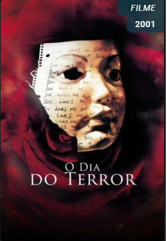
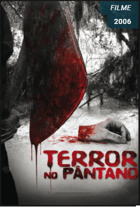

HOME
Séries:
Comédia
Ficção
Terror
Filmes:
Comédia
Ficção
Terror
Cadastro
Página de Filmes (Terror):
O dia do Terror

O dia do Terror
Assista ao Trailer do O dia do Terror
Os escolhidos
Os Escolhidos
Assista ao Trailer de Os escolhidos
O Silêncio dos Inocêntes
O silêncio dos Inocêntes
Assista ao Trailer de O silêncio dos Inocêntes
Terror no Pantano

Terror no Pantano
Assista ao Trailer de Terror no Pântano
Quer saber mais sobre a SoulCode?
Clique aqui: Site Oficial Soulcode
Linkedin SoulCode Academy
Facebook SoulCode Academy
Instagram @soulcodeacademy
 Os Escolhidos
Os Escolhidos  O silêncio dos Inocêntes
O silêncio dos Inocêntes